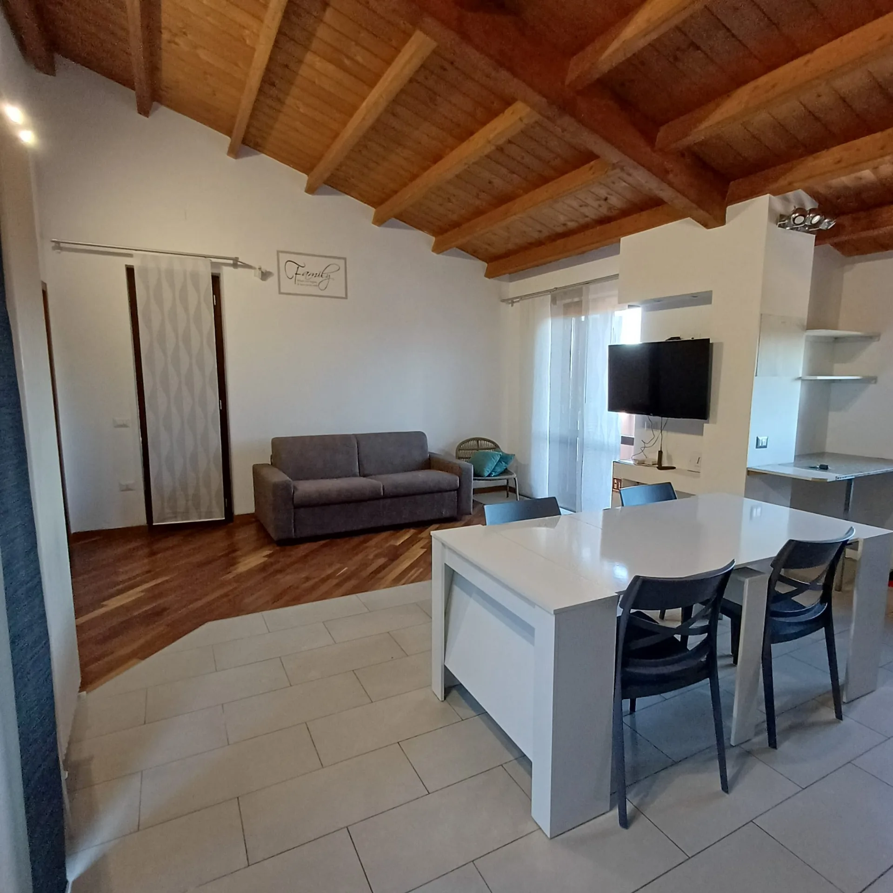

Ganze Wohnung
50 m² ausschließlich für Gäste.

San Gemini · Umbrien
Zeitgemäßer Komfort, die Wärme des Holzes und eine ideale Lage, um Umbrien zu entdecken.
Willkommen bei PN HOUSE
PN HOUSE ist eine einladende Ferienwohnung in San Gemini für alle, die Umbrien unabhängig entdecken möchten. Helle Räume verbinden moderne Linien mit sichtbaren Holzbalken.
Die 50 m² große Wohnung verfügt über ein Doppelzimmer, einen Wohnbereich mit Schlafsofa, eine ausgestattete Küche, ein Bad, einen Balkon und eine Terrasse. Sie bietet Platz für bis zu vier Personen.
Details und Bedingungen auf Booking.com ↗Alles, was Sie brauchen
50 m² ausschließlich für Gäste.
Doppelbett und Schlafsofa im Wohnbereich.
WLAN ist in der Wohnung verfügbar.
Kostenloser Privatparkplatz vor Ort.
Kühlschrank, Kochfeld und Essbereich.
Außenbereiche mit Blick auf die Stadt.
Die Wohnung
Wählen Sie ein Foto aus, um es im Vollbildmodus anzusehen.
Die Umgebung
Von San Gemini aus erreichen Sie Carsulae, die Marmore-Wasserfälle, Narni, Terni und viele umbrische Orte. Natur, Archäologie, Kultur und Kulinarik liegen ganz in der Nähe.
San Gemini auf der Karte öffnenSehenswürdigkeiten entdecken
Spazieren Sie durch Forum, Theater, Amphitheater und die antike Via Flaminia.
Mehr erfahren ↗Historisches Fest und Traditionen des Ortes.
Mehr erfahren ↗Eine große historische Inszenierung im mittelalterlichen Herzen von Narni.
Mehr erfahren ↗Natur, Wanderwege und ein eindrucksvolles Wasserschauspiel.
Mehr erfahren ↗Umbrische Panoramen, Kunst und die Tradition des Sagrantino-Weins.
Mehr erfahren ↗Kunst, Landschaft und Geschichte mit Blick auf das Tibertal.
Mehr erfahren ↗Ein historischer Ort über dem Tal der Calanchi.
Mehr erfahren ↗Ein Panoramaerlebnis im umbrischen Apennin.
Mehr erfahren ↗Kunst, Geschichte und eine der faszinierendsten Kathedralen Italiens.
Mehr erfahren ↗Ein Park, in dem Natur, der Fluss Nera und Geschichte aufeinandertreffen.
Mehr erfahren ↗Öffnen Sie den vollständigen Atlas mit Zielen, Richtungen und Luftlinienentfernungen ab PN HOUSE.
Una gita nella Città Eterna
Von den grünen Hügeln Umbriens bis zum beleuchteten Kolosseum: Rom eignet sich hervorragend für einen Tagesausflug. Die Fahrzeit beträgt je nach Strecke und Verkehr ungefähr eine Stunde und fünfzehn Minuten oder mehr.

Buchen il soggiorno
Prüfen Sie Preise, Verfügbarkeit und Bedingungen und schließen Sie die Buchung sicher über Booking.com ab.